Project Overview
This project uses a custom Python analysis pipeline to process raw ecommerce marketplace datasets from multiple CSV sources including orders, products, and country-level data.
The workflow combines data cleaning, validation, KPI reporting, and business-oriented visualization to generate operational insights across multiple marketplaces and countries.
Pipeline Workflow
The project follows a simple analytics workflow that transforms raw CSV files into cleaned data, KPI calculations, and final dashboard visualizations.
Key Metrics
Total Revenue
€261,449
Total Profit
€139,492
Total Orders
815
Average Margin
40.58%
Marketplace and Country Performance
This section compares marketplace and country-level performance using revenue, profit, order volume, and return-related indicators.
Key Insights
- Amazon generated the highest marketplace revenue and order volume.
- Poland produced the strongest overall revenue performance.
- Germany achieved the highest total profit across analyzed countries.
- Austria recorded the highest average order value despite lower order volume.
- Hungary and Austria showed the highest return-rate levels.
Dataset Scope
9 countries · 3 marketplaces
Data Quality
Validated during preprocessing workflow
HEATMAP - Marketplace Orders by Country
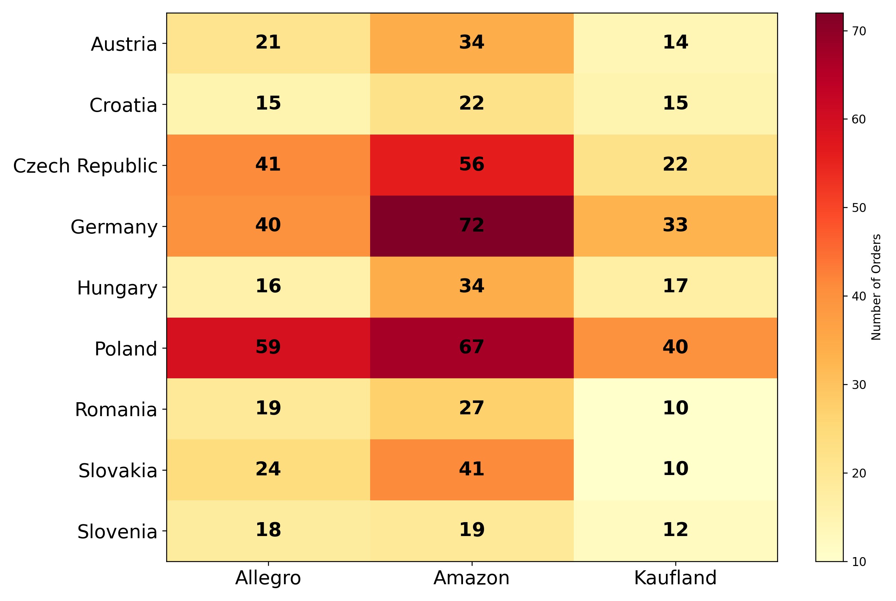
Revenue by Marketplace
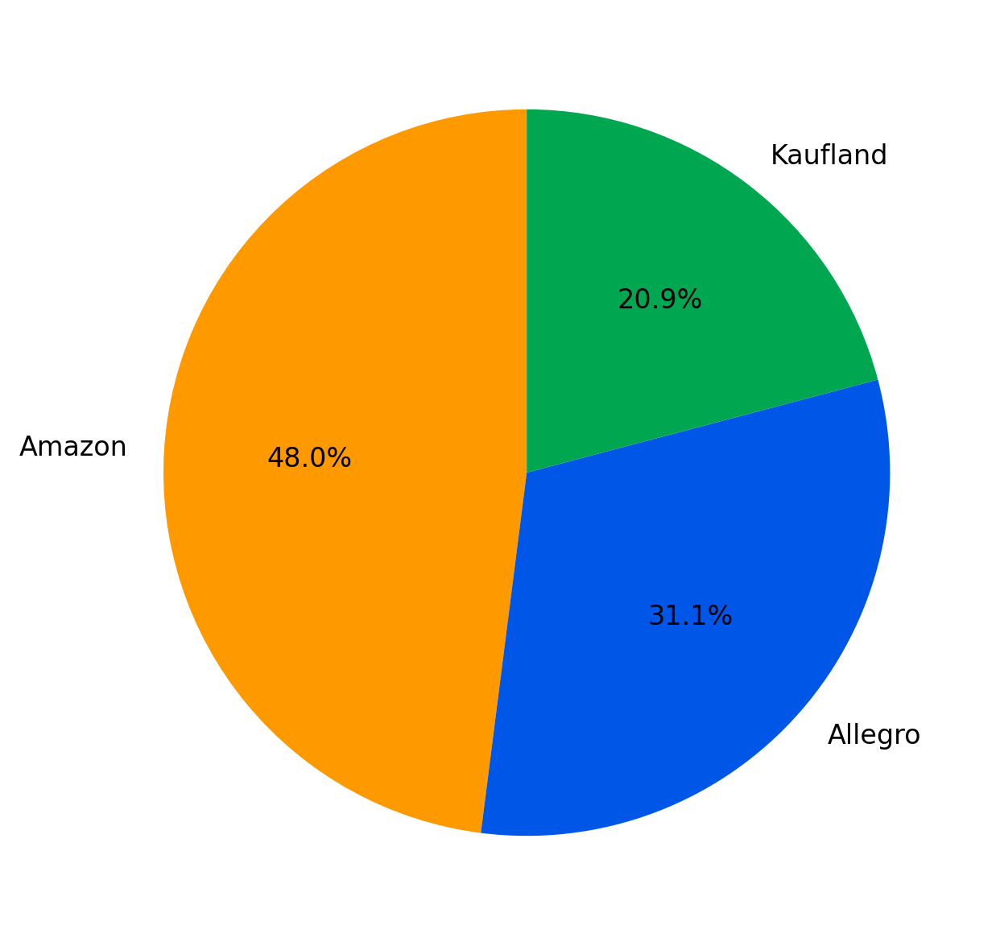
Orders by Marketplace
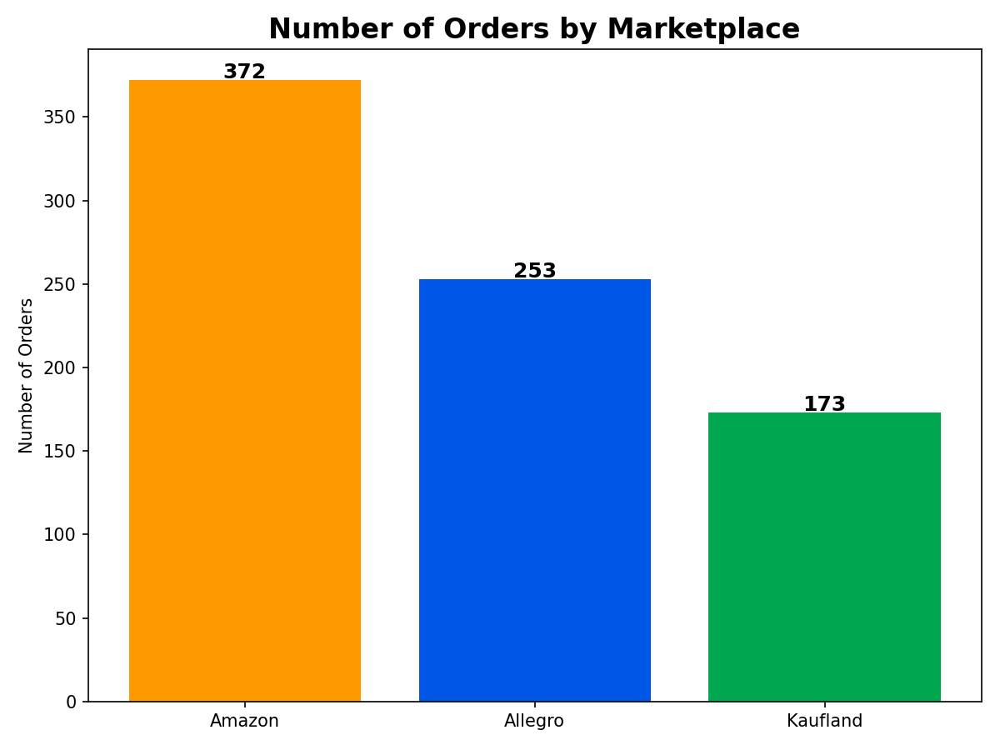
Revenue by Country
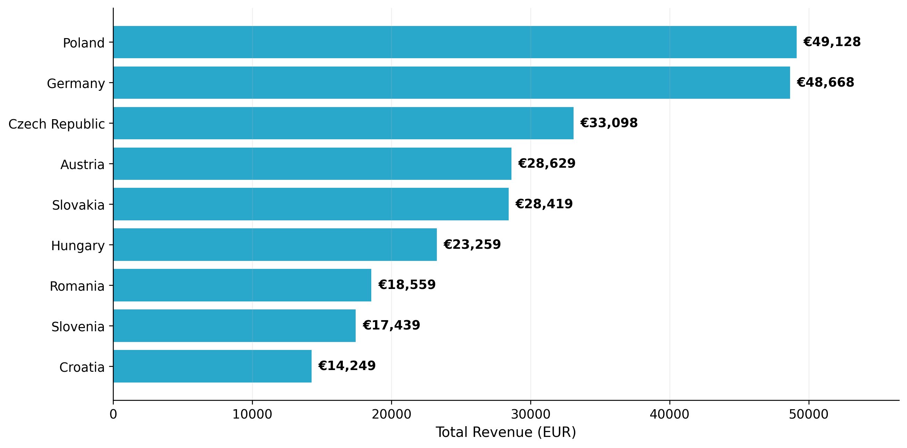
Profit by Country
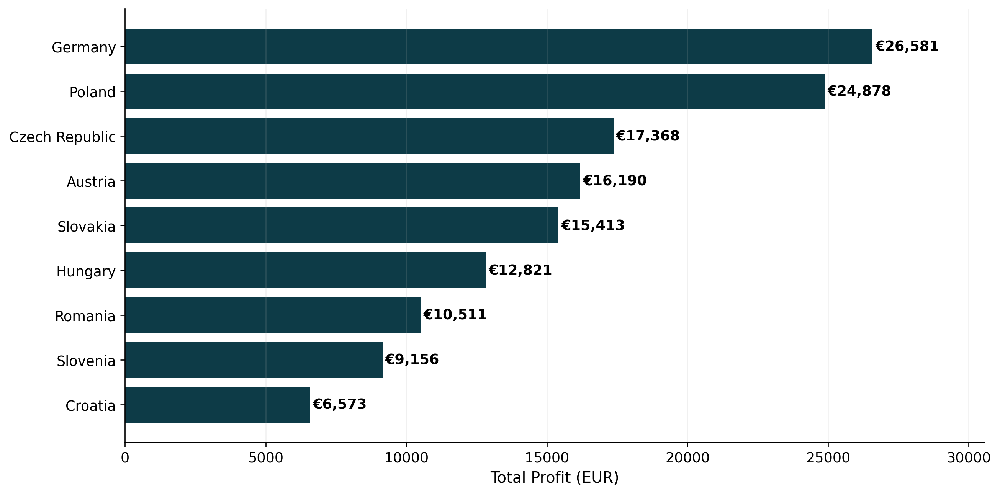
Sales Trends
Revenue and order activity showed strong seasonal fluctuations, with peak marketplace performance observed in June and October.
Monthly Revenue Trend
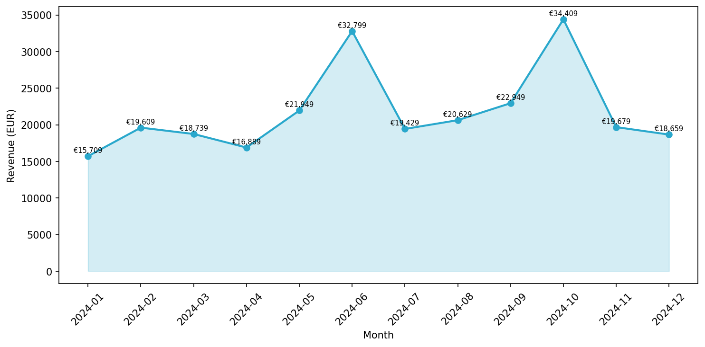
Monthly Orders Trend
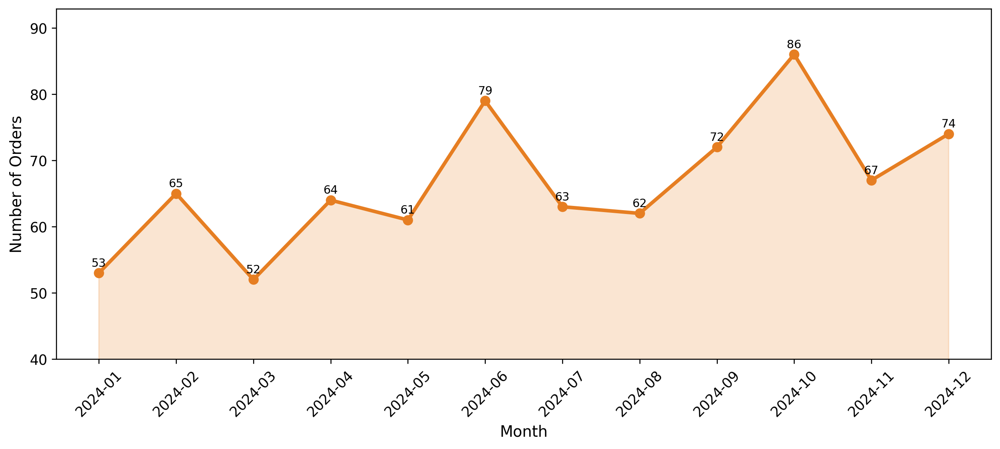
Product Performance
This section analyzes product-level performance across revenue, sales volume, profitability, and return rates.
Top Products by Revenue
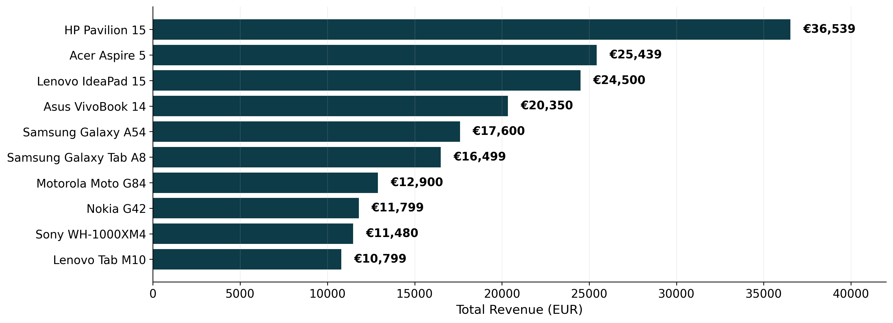
Top Products by Return Rate
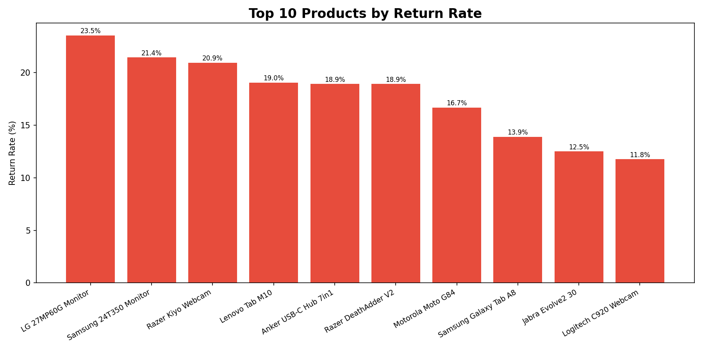
Product Insights
- HP Pavilion 15 generated the highest product-level revenue.
- LG 27MP60G Monitor recorded the highest product return rate in the dataset.
- Product sales were concentrated among a small number of top-performing SKUs.
- Phones and laptops represented the strongest-selling product categories.
- Lower-performing products showed weaker sales consistency across marketplaces.
- Revenue concentration suggests dependency on a small product subset.
Category Analysis
Category-level analysis focused on revenue contribution, profitability, and sales distribution across product groups.
Revenue by Category
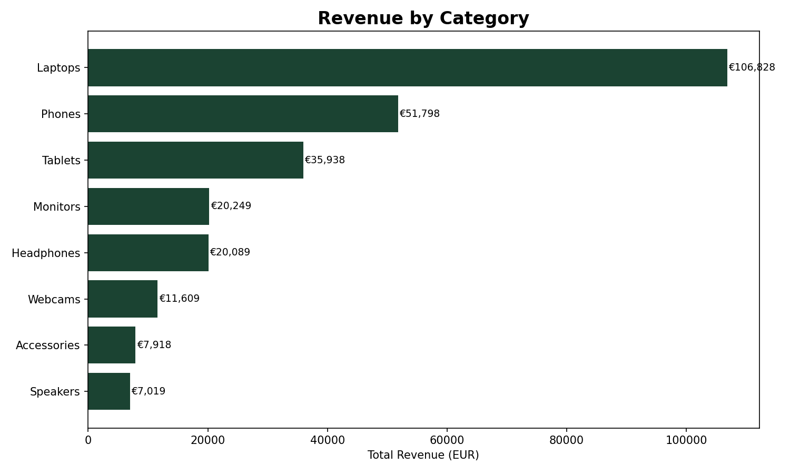
Average Margin by Category
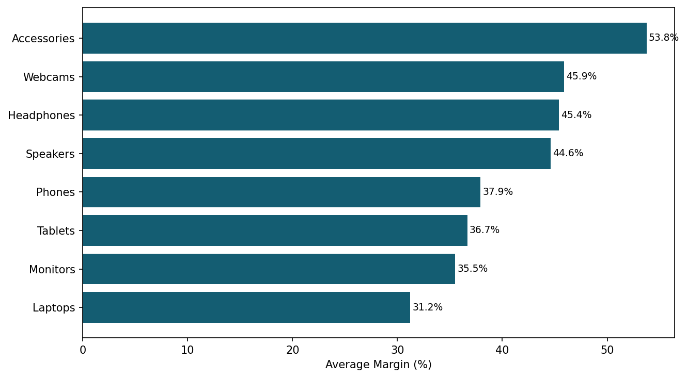
Revenue by Category per Country
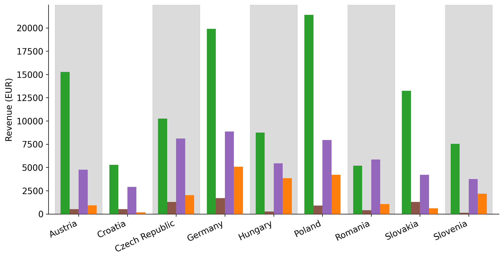
Category Insights
- Electronics generated the highest total revenue.
- Home & Living achieved the strongest average margin.
- Germany dominated Electronics sales across marketplaces.
- Accessories showed high sales volume but lower profitability.
Operational Insights
- Amazon was the strongest marketplace by revenue contribution
- Poland and Germany were the leading countries by total revenue
- Germany achieved the highest total profit, indicating strong commercial efficiency
- June and October showed the strongest monthly revenue performance
- Hungary and Austria recorded the highest return rates, highlighting areas for operational review
Technologies Used
- Python for data processing, business logic, and analysis workflow automation
- Pandas for cleaning, aggregating, and validating transactional ecommerce data
- Matplotlib for static business visualizations used in the dashboard
- HTML and CSS for building a structured portfolio presentation layer
- Git and GitHub for version control, documentation, and project publishing
Project Summary
This project demonstrates the ability to transform raw marketplace sales data into structured business insights using Python-based analytics workflows.
The dashboard covers revenue performance, profitability monitoring, marketplace comparison, category analysis, country-level performance, and operational risk indicators.
Possible Future Improvements
Interactive Filters
Dynamic filtering by country, marketplace, category, and reporting period.
SQL Integration
Scalable database storage and structured analytical querying.
Automated ETL
Recurring data import, transformation, and reporting workflows.
Real-Time Reporting
Scheduled dashboard updates with continuously refreshed marketplace data.